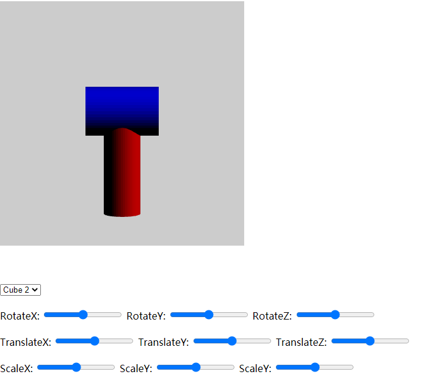
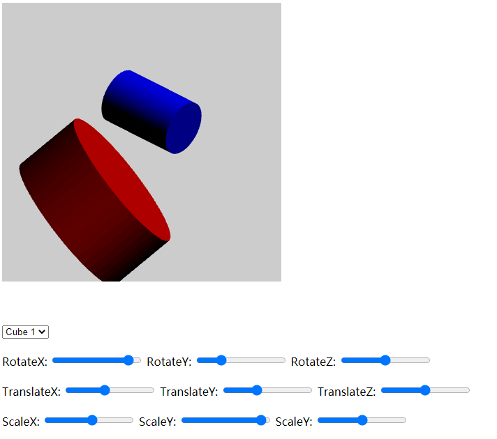
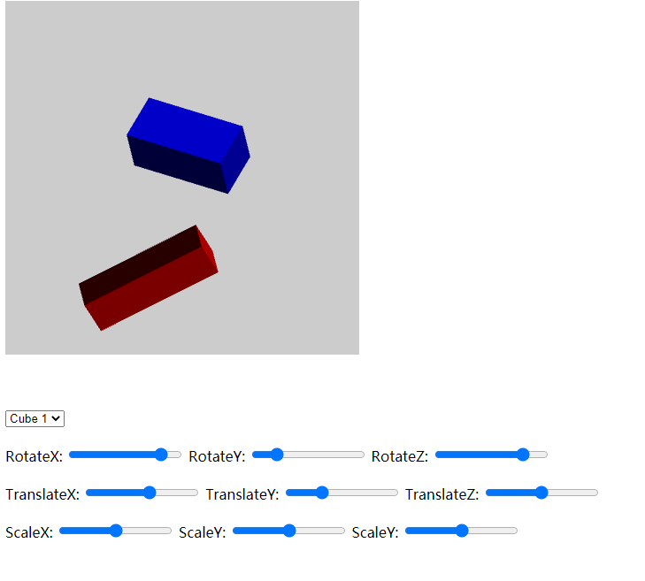
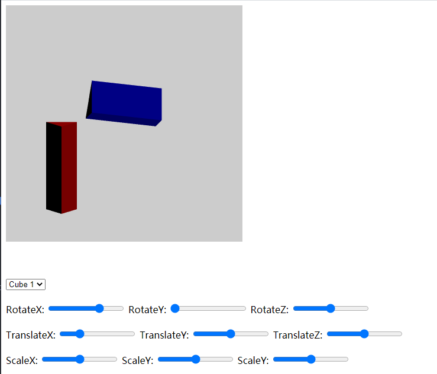

<-Back to main page
Prog2: Draw a mallet's
Ruiyang Liu, Rliu60@ucsc.edu
Project Overview
In this programing assignment, I will create two cylenders in the 3D world. At default, the number of side is 50, and they are arranged like a mallet. There are also some user interface, you can play around with each cylinder.
User Guide
- You will see a default mallet if you change nothing.
- You can select each object and do the operation(translate, rotate or scale). Cube1 is the red one, cube2 is the blue one.
- After you selected the object, you can do the following operations with corresponding sliders: translate, rotate and scale.
- Each operation is supported at three axies.
- Try to modify each slider, you can see from different angle for each object.
- Note1: This is the implementation of flat shading. Each face has one same color.
- Note2: Canvas color set as light gray, so you can see the object more clearly.
- Base code credit to Lucas:)
NOTICE: You can change the number of sides if you want to. But this operation is not available on the website directly. (I believe it's optional).
You can do this by change the value of "num_ver" on cube.js, line 9. The default value is 50.
Program approach/logic:
- 1.Calculate each vertex coordinates based on number of side.
- 2.Assign vertex coordinates to corresponding vertics, indices and normal array.
- 3.Send the value to GPU
- 4.Read input from slider, and set translate/rotate/scale based on user's demand
Example output
1)default output when you change nothing. You should be able to see this when website opened
The light source locates at [1,1,1], which is the right-front-up corner.
So the bule cylinder's upper part is lighter and red one's right part is lighter.

2)Some sliders are changed randomly, so you can see the cylinders from different angles.

3)When the number of side changed to 4, they are cubes. In this picture, the position of cubes are modified from the default mallet.
It's clear to see the flat shading, each face shares a same normal and color.

4)When the number of side changed to 3. In this picture, the position of cubes are modified from the default mallet.
